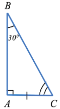
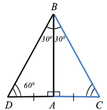
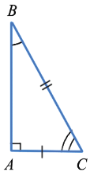
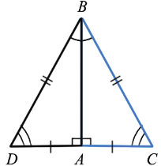
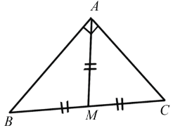

10. Сумма двух острых углов прямоугольного треугольника равна 900
По теореме о сумме углов треугольника сумма углов треугольника равна 1800, прямой угол равен 900, поэтому сумма двух острых углов прямоугольного треугольника равна 900.
20. Катет прямоугольного треугольника, лежащий против угла в 300, равен половине гипотенузыДано: △ABC, ∠A = 900, ∠B = 300
Доказать: AC = 1/2BC
Доказательство:

∠A + ∠B + ∠C = 1800 (по теореме о сумме углов треугольника), ⇒ ∠C = 1800 - ∠A - ∠B =1800 - 900 - 300 = 600. Приложим к △ABC равный ему △ABD:

Рассмотрим △BCD: ∠B = ∠DBA +∠ABC = 300 + 300 = 600, ⇒ ∠B = ∠D = 600, а если в каком-либо треугольнике два угла равны, то такой треугольник равнобедренный, значит △BCD - равнобедренный и DC = BC, но AC = 1/2 DC, ⇒ AC = 1/2 BC, что и требовалось доказать.
30. Если катет прямоугольного треугольника равен половине гипотенузы, то угол, лежащий против этого катета, равен 300
Дано: △ABC, ∠A = 900, AC = 1/2 BC
Доказать: ∠B = 300
Доказательство:

Приложим к △ABC равный ему △ABD:

DC = DA + AC = 2AC, но АС =1/2 ВС, значит, DC = ВС, то есть BC = BD = DC, ⇒ △BCD - равносторонний, а значит ∠BDC = ∠CBD =∠BCD = 600, но ∠CBD = 2 ∠ABC, ⇒ ∠ABC = 300, что и требовалось доказать.
Свойство медианы прямоугольного треугольника:
Медиана, проведенная к гипотенузе прямоугольного треугольника, равна половине гипотенузы
